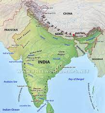

The Godavari basin extends over states of Maharashtra, Andhra Pradesh, Chhattisgarh and Odisha in addition to smaller parts in Madhya Pradesh, Karnataka and Union territory of Puducherry having a total area of 3,12,812 Sq.km with a maximum length and width of about 995 km and 583 km.
The Cauvery basin extends over states of Tamil Nadu, Karnataka, Kerala and Union Territory of Puducherry draining an area of 81,155 Sq.km which is nearly 2.7% of the total geographical area of the country with a maximum length and width of about 560 km and 245 km. ... The river drains into the Bay of Bengal.
The Mahanadi basin is the 8th largest basin in the country having total catchment area of 139681.51 sq. km which is nearly 4.28% of the total geographical area of the country. It lies between east longitudes 80° 30' to 86° 50' and north latitudes 19° 21' to 23° 35'.